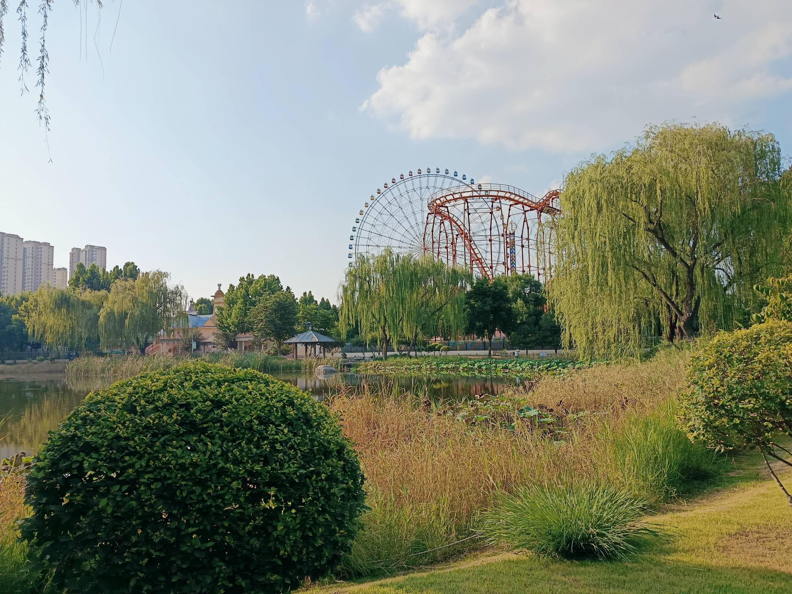
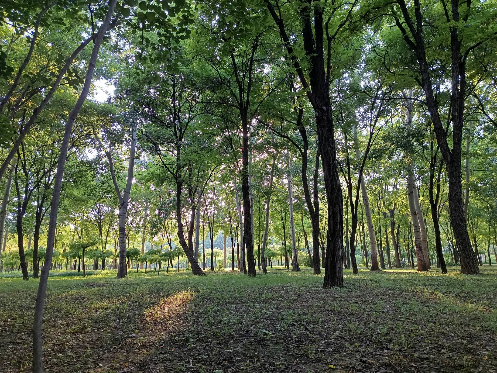
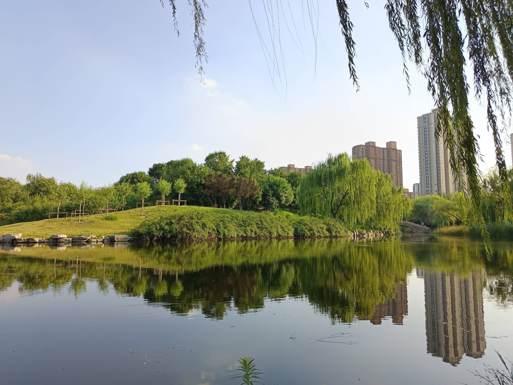
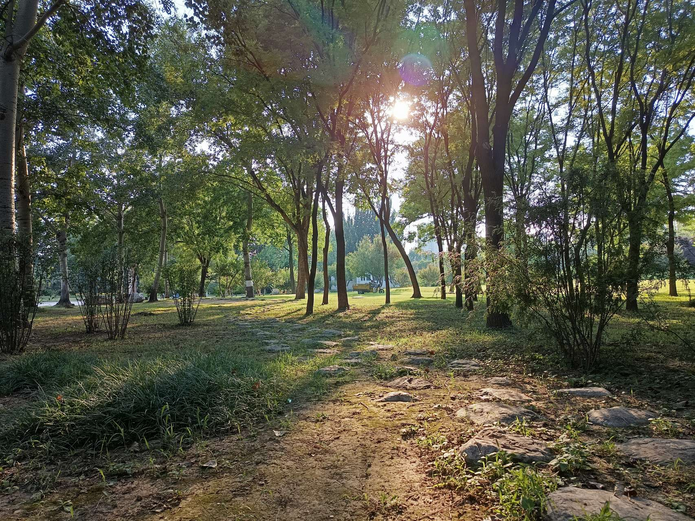
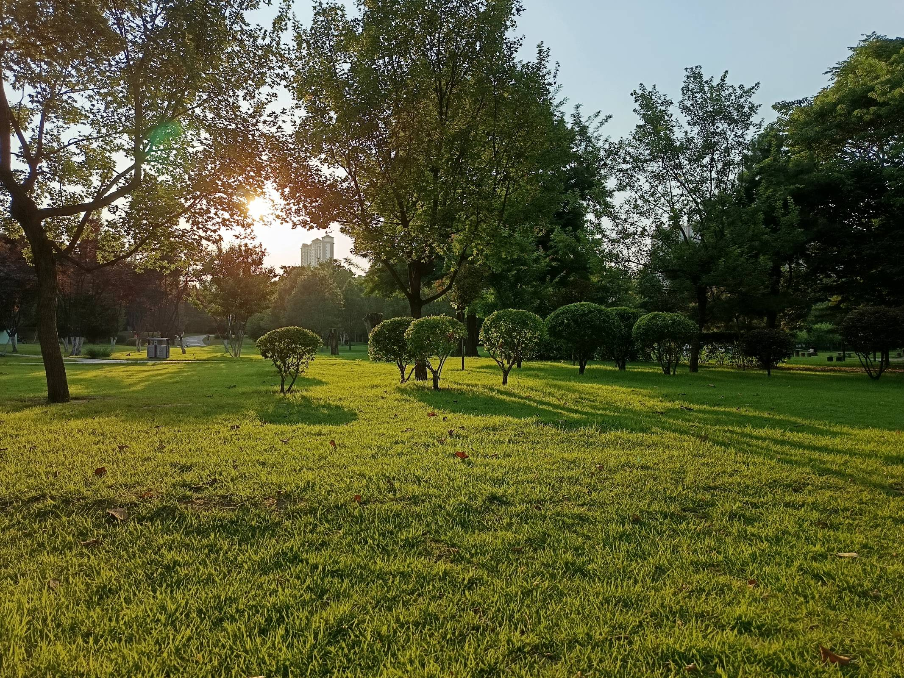
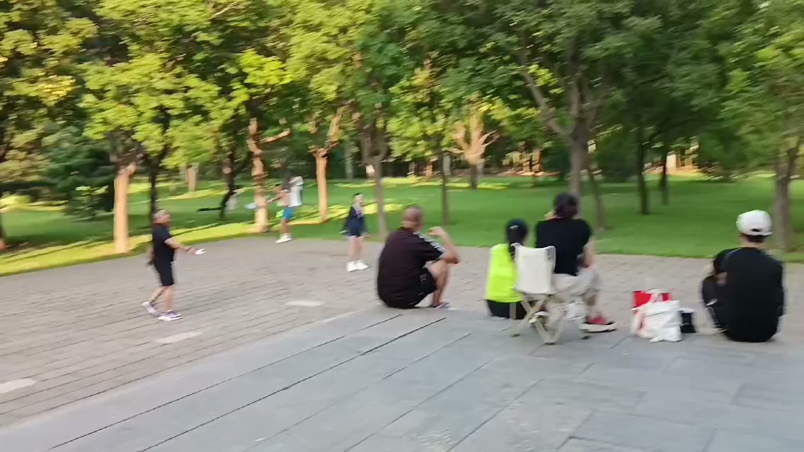

旅行不一定都要去远地方的古寺和石窟。
有时候，
只是想在一座城市的绿里，走慢一点。
四十秒，一段走得不着急的绿·the film
植物园的好处，是它不要求你"看懂"什么。没有碑文，没有讲解员，没有必须打卡的景点。你只需要走进去，让眼睛被绿色填满。
镜头里晃过的，是阔叶、是花境、是水面反上来的光。这些都不重要，重要的是那四十秒里，没有人催你。

走进去，让眼睛被绿色填满·the avenue

没有必须打卡的景点·wander
在城市里待久了，会忘记植物是按另一种节奏活的。它们不赶地铁，不刷消息，一片叶子从卷到展，用的是一整个春天。
我举着手机走了一小圈，没怎么构图，也没怎么剪辑。它本来就是散的、慢的、不急着讲完的——和旅行里那些宏大的遗迹相反，但同样值得记一笔。

一片叶子从卷到展，用一整个春天·close-up

不赶地铁，不刷消息·just being here

散的、慢的、不急着讲完的·greenhouse

视频的第一帧，也是这一篇的封面·the cover
古寺要人仰望，
植物园只请人坐下。
两种旅行，
一种往外走，一种往里收。